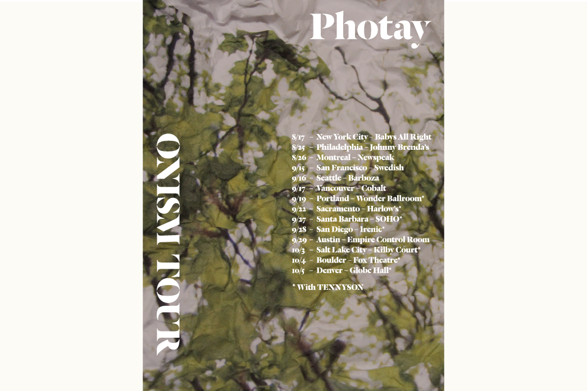
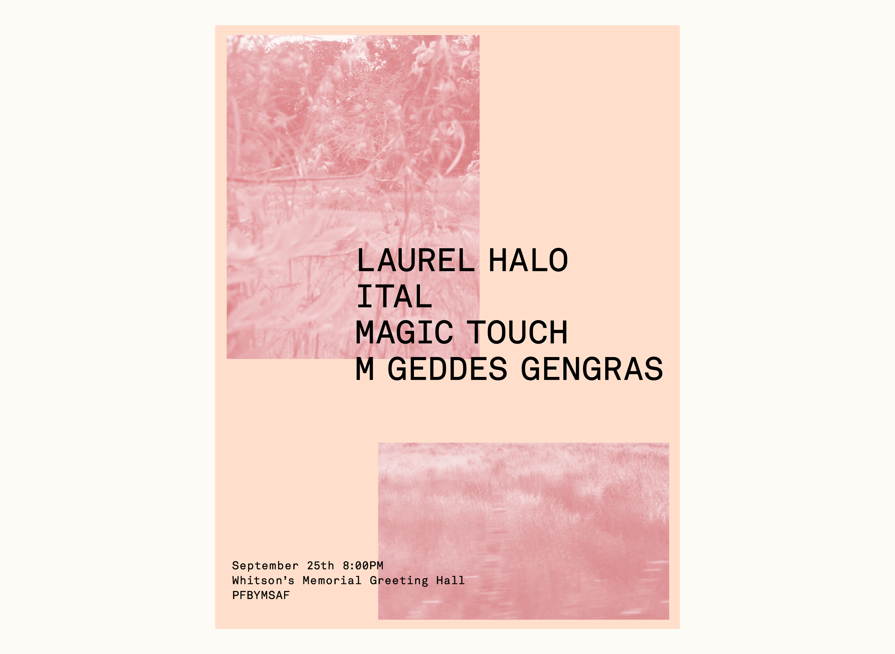

Victorian Secret - FREEANGELXX2 (And Justice For All Criminals)
Album and cassette packaging for Victorian Secret's (aka Chester Raj Anand) debut album released on Bunny Jr. Tapes. Photos by Chester Raj Anand, Art Direction and design by me.


